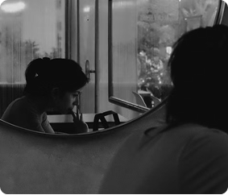
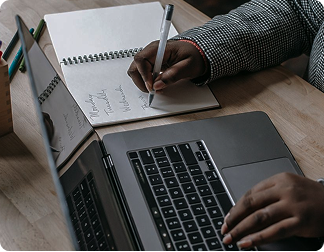
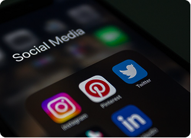

O uso excessivo de telas, como celular, computador, televisão e tablet, pode trazer diversos prejuízos para a saúde física e mental. Um dos principais impactos acontece no sono. A luz azul emitida pelas telas reduz a produção de melatonina, hormônio responsável por preparar o corpo para dormir, fazendo com que o cérebro entenda que ainda é dia.
Além disso, o uso de redes sociais, jogos e outras atividades digitais deixa a mente mais estimulada, dificultando o relaxamento. Mesmo quando a pessoa consegue dormir, a qualidade do sono pode ser pior, com menos tempo nas fases mais profundas e restauradoras, o que faz com que ela acorde cansada e sem disposição.
O excesso de tempo em frente às telas também afeta a saúde mental, a concentração e a produtividade. A comparação constante com a vida de outras pessoas nas redes sociais pode diminuir a autoestima e aumentar sentimentos de ansiedade e tristeza. Ao mesmo tempo, o grande volume de informações recebido diariamente sobrecarrega o cérebro e pode causar cansaço mental.



As notificações frequentes e o hábito de alternar entre várias atividades dificultam a concentração e reduzem a capacidade de manter o foco por longos períodos. Como resultado, muitas pessoas acabam procrastinando tarefas importantes, buscando distração nas redes sociais, o que prejudica o desempenho nos estudos, no trabalho e nas atividades do dia a dia.